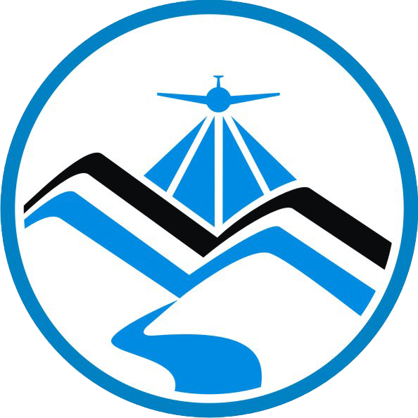

<!DOCTYPE html>
<html>
<head>
	
	<title>Taal Open LiDAR</title>

	<meta charset="utf-8" />
	<meta name="viewport" content="width=device-width, initial-scale=1.0">
	
	<link rel="shortcut icon" type="image/x-icon" href="docs/images/favicon.ico" />

    <link rel="stylesheet" href="https://unpkg.com/leaflet@1.6.0/dist/leaflet.css" integrity="sha512-xwE/Az9zrjBIphAcBb3F6JVqxf46+CDLwfLMHloNu6KEQCAWi6HcDUbeOfBIptF7tcCzusKFjFw2yuvEpDL9wQ==" crossorigin=""/>
    <script src="https://unpkg.com/leaflet@1.6.0/dist/leaflet.js" integrity="sha512-gZwIG9x3wUXg2hdXF6+rVkLF/0Vi9U8D2Ntg4Ga5I5BZpVkVxlJWbSQtXPSiUTtC0TjtGOmxa1AJPuV0CPthew==" crossorigin=""></script>
    <script src="./static/leaflet-control-geocoder.js"></script>
    <link rel="stylesheet" href="./static/leaflet-control-geocoder.css" />

	<style>
		html, body {
			height: 100%;
			margin: 0;
		}
		#map {
			width: 100%;
			height: 100%;
		}
		.info { padding: 6px 8px; font: 14px/16px Arial, Helvetica, sans-serif; background: white; background: rgba(255,255,255,0.8); box-shadow: 0 0 15px rgba(0,0,0,0.2); border-radius: 5px;  overflow-y: scroll; max-height: 800px; max-width: 250px} 
		.info h4 { margin: 0 0 5px; color: #888; }
		.legend { text-align: left; line-height: 18px; color: #555; max-height: 160px} 
		.legend i { width: 18px; height: 18px; float: left; margin-right: 8px; opacity: 0.7; }
	</style>

</head>
<body>

<div id='map'></div>

<script type="text/javascript" src="./data/taal-20km-grid.js"></script>

<script type="text/javascript">

	var map = L.map('map').setView([14.000, 120.998], 12);

	// osm base
	osm_map = L.tileLayer(
    'https://{s}.tile.openstreetmap.org/{z}/{x}/{y}.png', {
      attribution: 'Map data © <a href="http://osm.org/copyright">OpenStreetMap</a> and contributors',
      maxZoom: 18
    }).addTo(map).bringToBack();

	//wms layer 
	tile_layer = L.tileLayer.wms('https://lipad.dream.upd.edu.ph/geoserver/wms', {
    ptype: "gxp_wmsgetfeatureinfo",
    layers: 'lipad:philgrid',
    format: 'image/png',
    transparent: true,
    'opacity':0.75,
    tiled:true,
    visibility:true,
    continuousWorld: true,
 	 }).addTo(map).bringToFront();

	//nominatim 
	var geocoder = L.Control.geocoder({
  		geocoder: L.Control.Geocoder.nominatim({
        geocodingQueryParams: {countrycodes: 'ph'}
    	}),
  	defaultMarkGeocode: false,
  	position: "topleft"
		})
  	.on('markgeocode', function(e) {
    	var bbox = e.geocode.bbox;
    	map.fitBounds(bbox);
  		}).addTo(map);


	// created a dictionary selected features key -> gridref, value -> feature
	var selectedFeats = {};

	// control that shows state info on hover
	var info = L.control();

	info.onAdd = function (map) {
		this._div = L.DomUtil.create('div', 'info');
		this.update();
		return this._div;
	};

	info.update = function (props) {

		this._div.innerHTML = '<p class="w3-center"></p><h4>Taal Open LiDAR Data</h4><p>LiDAR data (Laz - point clouds, DTM & DSM - elevation models, and Orthophotographs) from the DREAM/Phil-LiDAR Program for the areas affected by the Taal eruption are openly accessible here.</p><b><a href="https://potree.entwine.io/data/view.html?t=%5B283499.5,1550170,119.99999999999878%5D&p=%5B282647.27684079757,1550437.595648701,273.5677002626534%5D&r=%22https://phil-lidar-taal-entwine-s3.s3.us-east-2.amazonaws.com/Taal_Volcano_Island/%22&m=8&ph=1&ir=%5B0,43%5D&era=%5B-8.76,380%5D&ig=0.93&ic=-0.14&cf=%5B0,1,7,8,12%5D" target="_blank">Taal Island 3d Viz</a><br /><br /><b><a href="https://docs.google.com/document/d/1D0rD_duRaKuFbw8ASLp8DuLRu3RynYKUXTAqQG77JnQ/edit?usp=sharing" target="_blank">FAQ</a><br /><br />'

		this._div.innerHTML += (Object.keys(selectedFeats).length != 0 ? '<h4>LiDAR Data Available</h4>' : '<h4>Click on a tile</h4>')

		for (var key in selectedFeats){
  			var props =	selectedFeats[key].feature.properties;
		
			this._div.innerHTML +=  '</b><br />' + (props ?
			'<b>' + 'DREAM gridref: ' + props.GRIDREF 
			+ '</b><br />' + 'LAZ: ' + (props.LAZ ? '<a href="https://phil-lidar-taal-s3.s3.us-east-2.amazonaws.com/Taal_LAZ/'+ props.GRIDREF +'_LAZ_PL1.laz " target="_blank">download</a>' : 'none')
			+ '</b><br />' + 'DTM: ' + (props.DTM ? '<a href="https://phil-lidar-taal-s3.s3.us-east-2.amazonaws.com/Taal_DTM/'+ props.GRIDREF +'_DTM.tif " target="_blank">download</a>' : 'none')
			+ '</b><br />' + 'DSM: ' + (props.DSM ? '<a href="https://phil-lidar-taal-s3.s3.us-east-2.amazonaws.com/Taal_DSM/'+ props.GRIDREF +'_DSM.tif " target="_blank">download</a>' : 'none')
			+ '</b><br />' + 'ORTHO: ' + (props.ORTHO ? '<a href="https://phil-lidar-taal-s3.s3.us-east-2.amazonaws.com/Taal_ORTHO/'+ props.GRIDREF +'_ORTHO_PL1.tif " target="_blank">download</a>' : 'none')
			: 'Click a tile') + '</b><br /><a href="#" onclick=removeFeature("'+props.GRIDREF+'")>remove</a>' +  '</b><br />';
		}

		// ' | <a href="https://potree.entwine.io/data/view.html?r=%22https://phil-lidar-taal-s3.s3.us-east-2.amazonaws.com/data/'+ props.GRIDREF +'_LAZ_PL1.etp%22 " target="_blank">view</a>'  
			

		if (selectedFeats == {}){
			this._div.innerHTML += '<p>click a tile</p>'
		}

	};

	info.addTo(map);

	function style(feature) {
		return {
			weight: 2,
			opacity: 1,
			color: 'white',
			dashArray: '3',
			fillOpacity: 0.0,
		};
	}

	function highlightFeature(e) {
		var layer = e.target;

		layer.setStyle({
			weight: 5,
			color: '#600',
			dashArray: '',
			fillOpacity: 0.5
		});

		if (!L.Browser.ie && !L.Browser.opera && !L.Browser.edge) {
			layer.bringToFront();
		}

	}

	var geojson;

	function resetHighlight(e) {
		if (!(e.target.feature.properties.GRIDREF in selectedFeats)){
			geojson.resetStyle(e.target);	
		}
		
	}

	function zoomToFeature(e) {
		//map.fitBounds(e.target.getBounds());

		var gr = e.target.feature.properties.GRIDREF;

		if (gr in selectedFeats){
			// remove from dictionary and reset style 
			geojson.resetStyle(e.target)
			delete selectedFeats[gr]

		} else {
			// add to dictionary
			selectedFeats[gr] = e.target 
			highlightFeature(e)
		}

		info.update(e.target.feature.properties);
	}

	function removeFeature(gr){
		if (gr in selectedFeats){
			// remove from dictionary and reset style 
			geojson.resetStyle(selectedFeats[gr])
			delete selectedFeats[gr]
		}

		info.update(0)
	}

	function onEachFeature(feature, layer) {
		layer.on({
			mouseover: highlightFeature,
			mouseout: resetHighlight,
			click: zoomToFeature
		});
	}

	geojson = L.geoJson(taal20kmGrid, {
		style: style,
		onEachFeature: onEachFeature
	}).addTo(map);

	map.attributionControl.addAttribution('LiDAR data &copy; <a href="https://dream.upd.edu.ph/">DREAM/Phil LiDAR Program</a>');


  	var legend = L.control({position:'bottomleft'});
  	legend.onAdd = function (map) {
    	var div = L.DomUtil.create('div', 'info legend');
    	div.innerHTML += '<div class="w3-white"><p class="w3-medium"> Legend: </p><p></p></div>';
    	return div;
  	};

	legend.addTo(map);

</script>


</body>
</html>
